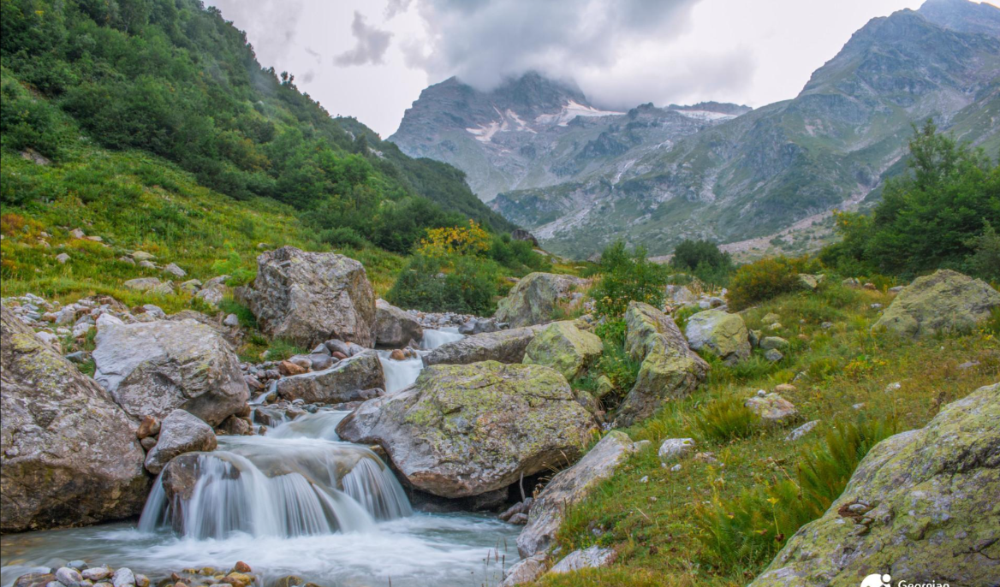

აფხაზეთი არის საქართველოს უკიდურესი ჩრდილო-დასავლეთის ისტორიული პროვინცია. ამჟამად მისი ჩრდილოეთ საზღვარი კავკასიონის მთავარი წყალგამყოფი ქედის თხემს გასდევს, სამხრეთით და სამხრეთ-დასავავლეთით შავი ზღვა აკრავს, ჩრდილო-დასავლეთის საზღვარი მდინარე ფსოუზე გადის, ხოლო აღმოსავლეთი  სვანეთ - აფხაზეთის ქედზე და მდინარე ენგურზე. აფხაზეთის ავტონომიური რესპუბლიკის ფართობი დღეს 8,7 ათასი კვ.კმ-ია, რაც საქართველოს ტერიტორიის 12,5 პროცენტს შეადგენს